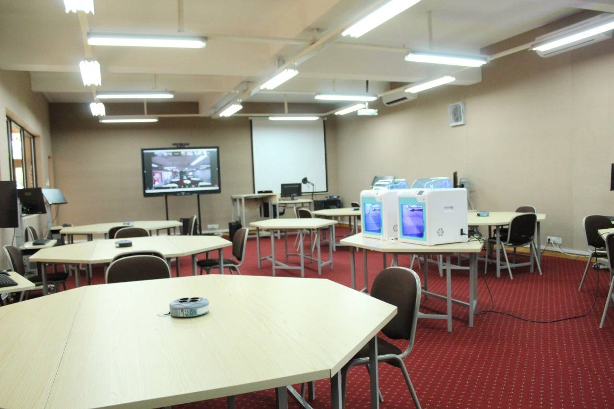
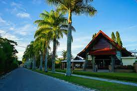
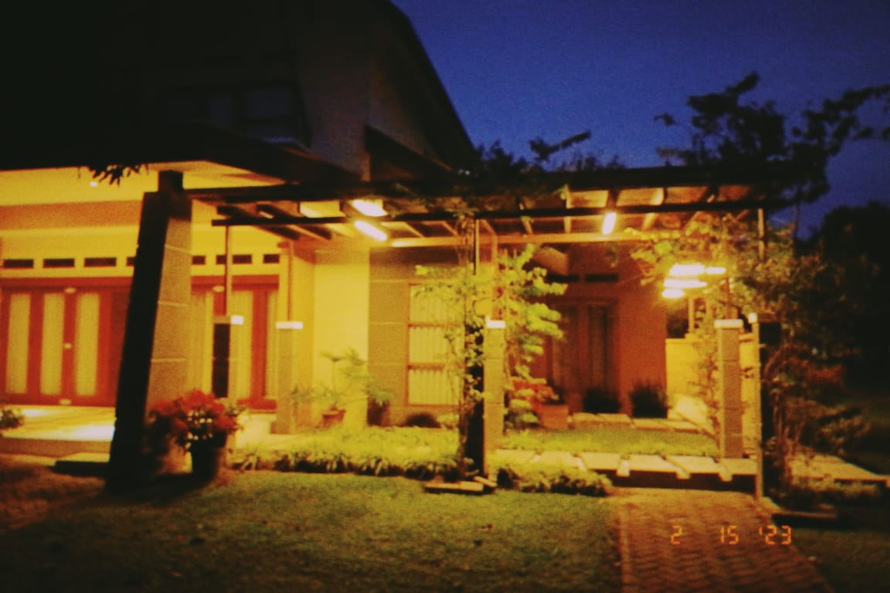
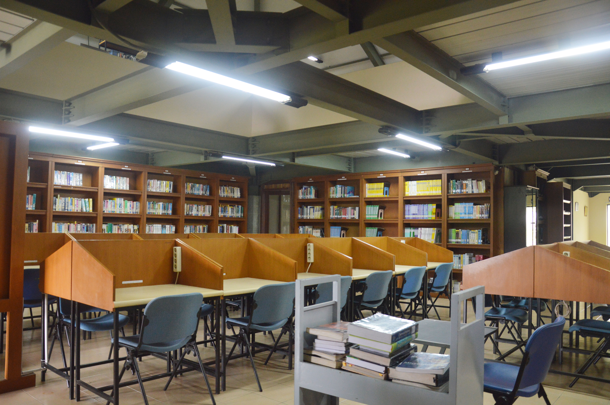
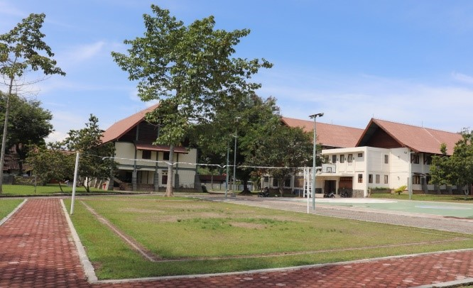
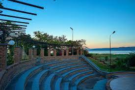

Institut Teknologi Del memiliki fasilitas yang akan sangat menunjak pendidikan untuk para mahasiswa.

Laboratorium
IT Del menyediakan laboratorium modern untuk praktikum mahasiswa di setiap program studi, memungkinkan pengaplikasian teori dalam lingkungan yang mendukung pengembangan keterampilan praktis, persiapan optimal untuk tantangan di dunia kerja teknologi.

Kantin
IT Del menyediakan kantin yang menyajikan fasilitas makan setiap harinya bagi mahasiswa dan dosen. Dengan pilihan menu yang beragam, kantin ini menjadi tempat nyaman untuk bersosialisasi sambil menikmati makanan, menciptakan lingkungan yang mendukung kebutuhan gizi dan kesejahteraan bagi seluruh komunitas kampus.

Akomodasi
IT Del menyediakan fasilitas olahraga lengkap, termasuk lapangan basket, voli, dan futsal, memungkinkan mahasiswa aktif berpartisipasi dalam kegiatan fisik dan rekreasi. Fasilitas ini tidak hanya mempromosikan gaya hidup sehat, tetapi juga memperkuat keterlibatan komunitas kampus dalam aktivitas olahraga.

Perpustakaan
IT Del menyediakan kantin yang menyajikan fasilitas makan setiap harinya bagi mahasiswa dan dosen. Dengan pilihan menu yang beragam, kantin ini menjadi tempat nyaman untuk bersosialisasi sambil menikmati makanan, menciptakan lingkungan yang mendukung kebutuhan gizi dan kesejahteraan bagi seluruh komunitas kampus.

Hiburan dan Olahraga
IT Del menyediakan fasilitas olahraga lengkap, termasuk lapangan basket, voli, dan futsal, memungkinkan mahasiswa aktif berpartisipasi dalam kegiatan fisik dan rekreasi. Fasilitas ini tidak hanya mempromosikan gaya hidup sehat, tetapi juga memperkuat keterlibatan komunitas kampus dalam aktivitas olahraga.

Ruang Terbuka
IT Del menawarkan lingkungan belajar yang unik dengan ruangan terbuka yang menakjubkan dekat Danau Toba. Mahasiswa dapat menikmati pemandangan indah yang menenangkan, menciptakan suasana inspiratif untuk pengembangan akademis mereka.
Klinik
IT Del menyediakan klinik kesehatan di kampus, memastikan akses mudah bagi mahasiswa dan staf untuk layanan perawatan kesehatan. Fasilitas ini mencerminkan komitmen IT Del dalam mendukung kesejahteraan komunitas kampus dengan menjadikan kesehatan sebagai prioritas utama.